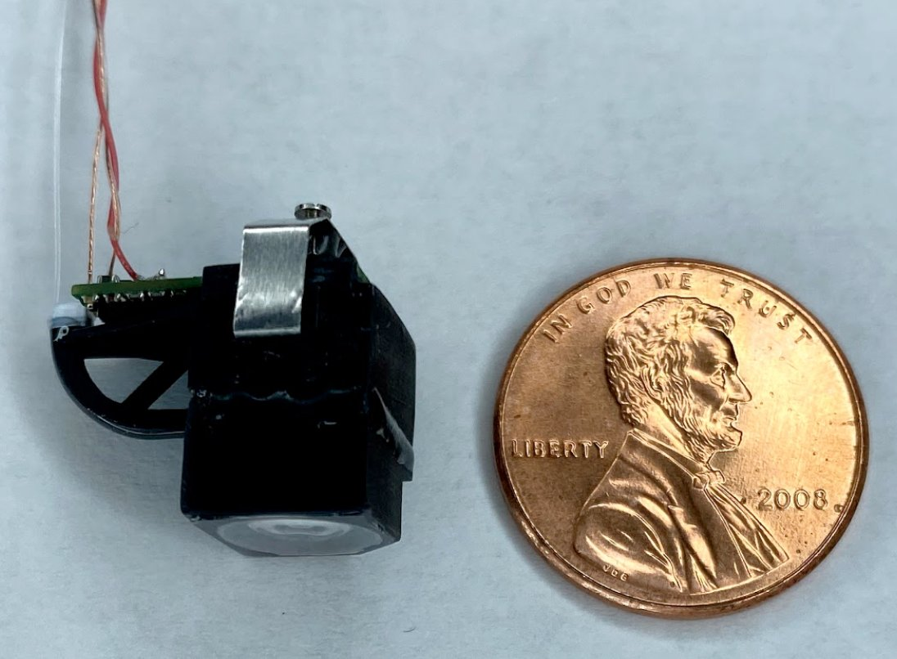
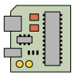
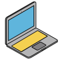

This site provides documentation for the Featherscope and Kiloscope microendoscopes for freely-moving calcium imaging. These scopes are the lightest ever created. Additionally, leverage cell phone camera lens technologies to provide distortion free imaging of 1000’s of cells.

Scope Guide
Learn about Featherscopes.

Software Guide
Learn about software for acquiring from ONIX hardware.